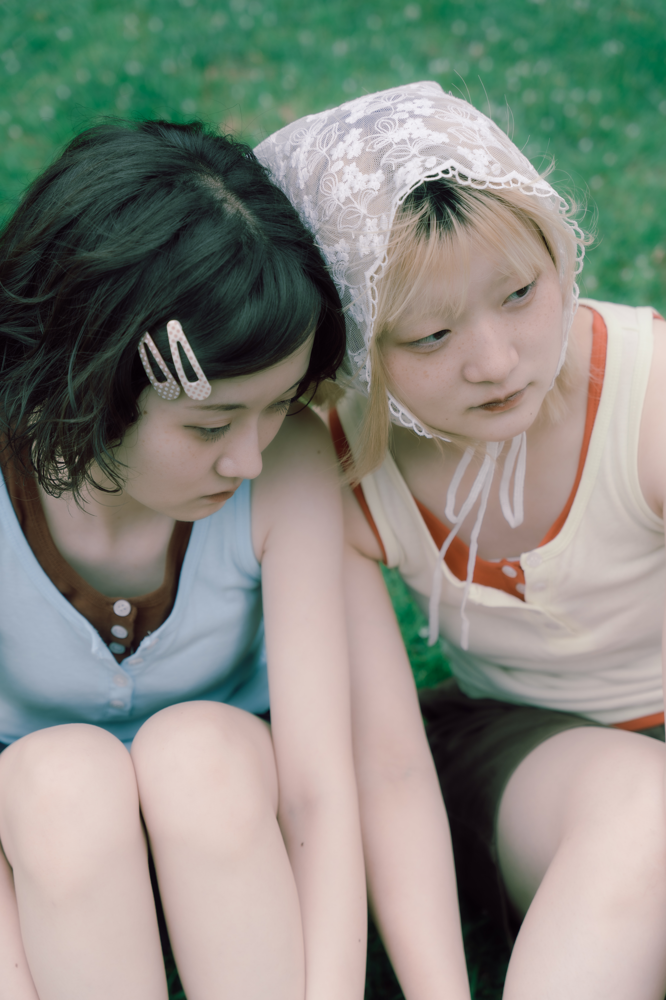
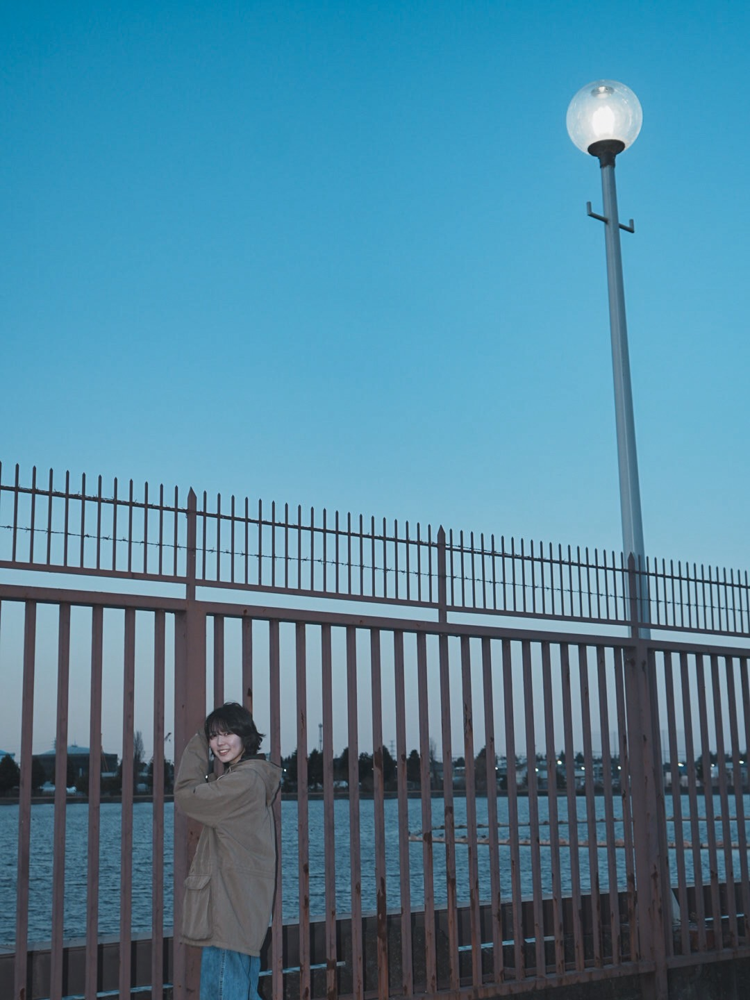
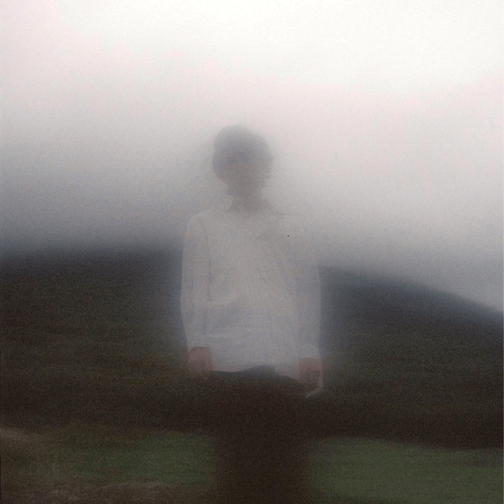

2026.07.21
いつの(六角猫)、「芯が強いようで弱い。そんな自分自身に言い聞かせるよう、現実に立ち向かえるよう」
interview
2026.07.21
wanbed 橋口 結生 — 「葉山にいくと原点に戻れるような気がします。」
interview
2026.02.08
西尾 瞭(AIITO) — イナズマイレブンの技を本気で習得すべく昼から夜まで練習しまくってた
interview
2026.01.05
月野恵 — 柿の花の中原蒼さん、雪国の京英一さんに楽曲が見つかりオープニングアクトとして出演
interview
2025.11.17
CRAZY BLUES よしだ さほ — あの時の私と同じように辛くて消えたくなってしまっている誰かに届いてくれたら
interview
2025.10.17
とた — 華のJK生活の夢を失った スマホで作曲できることを知り
interview
2025.09.08
緋乃白(湯冷めラジオ) — うつくしい島 与那国島 鼻先をくっつけてくる子馬、吹き抜ける風
interview
2025.09.01
Renzo Hori(まほろば) — 冷蔵庫で余らせてる具材をまとめてフードプロセッサーにぶち込んで生地で包んで蒸します
interview
2025.08.28
リチカ 左藤優希 — すきなひとと 背もたれのないベンチ
interview
2025.08.26
オールドマン 馬場友星 — ブルーハーツ みんなで聴くと盛り上がれて、ふたりで聴くとロマンチックで
interview
2025.08.15
iVy fuki & pupu — 感覚だけで 脳内に映像が放映されるように
interview
2025.07.31
映像作家 寺本勇也 後編 — 少年時代の感覚 忘れたくない
interview
2025.07.31
映像作家 寺本勇也 前編 — 一瞬の判断が一生残る
interview
2025.06.17
KBSNK(Limre/TEMPLIME) — 中華屋のオムライス どっちでもないけどどっちでもある
interview
2025.06.05
田中利幸(新東京) — 映画「Joker」(2019) 語らない説得力
interview
2025.05.31
nii(roi bob) — 人生を変えた1枚の音楽アルバム
interview
2025.05.16
MSKNG(Water Maze) — Big Muff Piランプが点いた瞬間に宇宙が始まる
interview
2025.05.04
ナナジュウハチ — 今年はダンスをはじめたい
interview
2025.04.27
タカハシナオキ(nous) — 英国にルーツを持つものに本能的に惹かれていました。
interview
2025.04.22
穂ノ佳 — 今まで行って良かった場所 "上高地"
interview